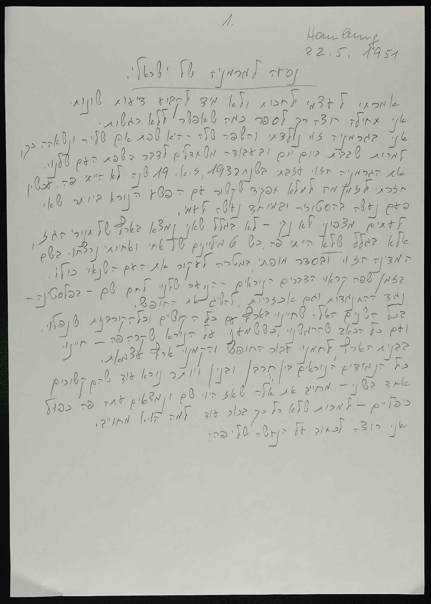

Alfred Landsberg — Deutschlandfahrt eines Israeli
An Israeli back in Hamburg, 1951 — nineteen years after leaving
The canonical return-visit text of the corpus: Landsberg leaves Germany in 1932, returns in 1951 for work, reads Hamburg as a foreign city (he never lived there — no memories to disturb), visits his parents' graves in Frankfurt, meets displaced Germans, refuses pity. Followed by companion essays Berlin 1956 and Eine Fahrt nach Ostberlin (~1959).
Open full presentation → Scans in Drive →Trip accounts & diaries — actual journeys back
Invitations, honours & refusals — the municipal return-visit programme
Remigration — moved back to live in Germany
Context — related but off the post-war return axis
Twenty cases, one corpus. Every confirmed return-to-Germany case in our holdings is here. Of 228 CJH archival collections swept, exactly one (Ernest Michel) carried a documented return — the theme lives almost entirely in the MTFN / Tefen material. Twelve cases link straight to their scanned pages in the Drive archive; the remaining eight — chiefly the rich Otto Mayer family cluster (G-F-0030) — are catalogued but not yet digitised, and are marked scan pending.
Access note. The "Open scans in Drive" links resolve to folders in the project Google Drive. They open only for accounts the archive has been shared with — if a reviewer hits a permissions wall, share the parent archive folder (or enable link-sharing) with their Google account.